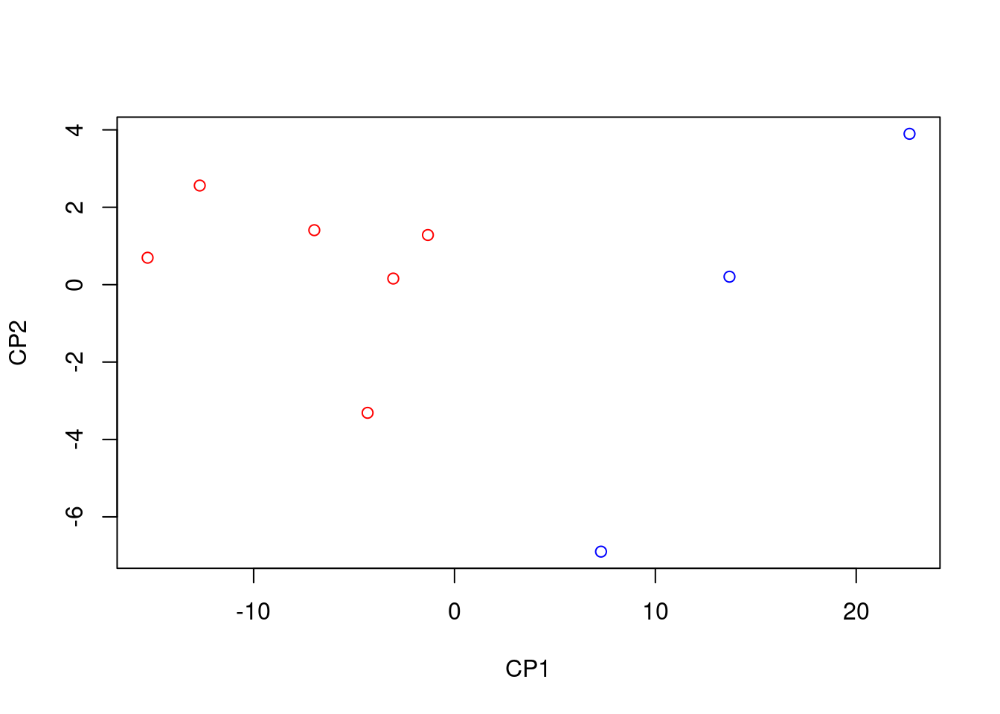

1.1 Regressió lineal simple
El problema plantejat a l’Exemple 1.1 és una instància de la situació general en la qual tenim parelles d’observacions de dues variables \(X\) i \(Y\) sobre una mostra de \(n\geqslant 2\) subjectes, \[ (x_i,y_i)_{i=1,2,\ldots,n}, \] i volem estudiar com depèn el valor de la variable \(Y\) del de \(X\). En aquest context:
Direm que \(X\) és la variable de control o independent
Direm que \(Y\) l’anomenam la variable de resposta o dependent
En general, volem trobar la millor relació funcional (el millor model estadístic, amb la terminologia introduïda en el tema anterior) que expliqui la variable \(Y\) en funció de la variable \(X\). En aquest tema, cercarem un model lineal. Les tècniques que es fan servir per resoldre aquest problema s’anomenen genèricament de regressió lineal. Nosaltres n’estudiarem una de concreta: la regressió lineal per mínims quadrats.

1.1.1 El model
En el model de regressió lineal suposam que existeixen \(\beta_0,\beta_1\in \mathbb{R}\) tals que \[ \mu_{Y|x}=\beta_0+\beta_1 x \] on \(\mu_{Y|x}\) és el valor esperat de \(Y\) sobre els subjectes per als quals \(X\) val \(x\). Volem estimar aquests paràmetres \(\beta_0\) (el terme independent del model) i \(\beta_1\) (la pendent del model) a partir d’una mostra.
Recordau la interpretació d’una funció lineal \(y=a_0+a_1x\):
El terme independent \(a_0\) és el valor de \(y\) quan \(x=0\)
La pendent \(a_1\) és la variació de \(y\) quan \(x\) augmenta en 1 unitat
Per tant, en el nostre model de regressió lineal:
\(\beta_0\) és el valor esperat de \(Y\) en els subjectes en els quals \(X\) val 0
\(\beta_1\) és la variació del valor esperat de \(Y\) quan el valor de \(X\) augmenta 1 unitat
Amb una mostra \((x_i,y_i)_{i=1,2,\ldots,n}\), calcularem estimacions \(b_0\) i \(b_1\) de \(\beta_0\) i \(\beta_1\). Això ens donarà la recta de regressió per a la nostra mostra: \[ \widehat{Y}=b_0+b_1 X. \] Aquesta recta, donat un valor \(x_0\) de \(X\), permet estimar el valor \(\widehat{y}_0=b_0+b_1 x_0\) de \(Y\) sobre un subjecte en el qual \(X\) valgui \(x_0\). Hi empram \(\widehat{Y}\) a la dreta per posar èmfasi que no és que \(Y\) sigui \(b_0+b_1X\), sinó que això darrer estima el valor de \(Y\) a partir del valor de \(X\). En concret, si \(\widehat{y}_0=b_0+b_1 x_0\), direm a \(\widehat{y}_0\) el valor estimat de \(Y\) quan \(X=x_0\).
Fixau-vos que, d’aquesta manera, donada una observació \((x_i,y_i)\) de la nostra mostra, distingim entre
\(y_i\): el valor de \(Y\) sobre l’individu corresponent
\(\widehat{y}_i=b_0+b_1 x_i\): l’estimació del valor de \(Y\) sobre l’individu corresponent a partir del seu valor de \(X\) i la recta de regressió obtinguda
El model anterior el reescrivim com a \[ Y|x=\mu_{Y|x}+ E_x=\beta_0+\beta_1 x+ E_x \] on
\(Y|x\) és la variable aleatòria “valor de \(Y\) quan \(X\) val \(x\)”: Prenem un subjecte en el qual \(X\) val \(x\) i hi mesuram \(Y\)
\(\mu_{Y|x}\) és el valor esperat de \(Y|x\), és a dir, la mitjana dels valors de \(Y\) sobre tots els individus en els quals \(X\) valgui \(x\)
\(E_x=Y|x -\mu_{Y|x}\) és la variable aleatòria error o residu, que dóna la diferència entre el valor de \(Y\) en un individu amb \(X=x\) i el seu valor esperat
Prenent valors esperats als dos costats de la igualtat \(Y|x=\mu_{Y|x}+ E_x\) obtenim que \(\mu_{Y|x}=\mu_{Y|x}+ \mu_{E_x}\) i per tant que \(\mu_{E_x}=0\). Així doncs, aquest model implica que els valors esperats de les variables error \(E_x\) són tots 0.
1.1.2 Mínims quadrats
L’error que cometem amb l’estimació \(\widehat{y}_i=b_0+b_1x_i\) a cada observació \((x_i,y_i)\) de la mostra és \[ e_i=y_i-\widehat{y}_i=y_i-(b_0+b_1 x_i) \]
La Suma dels Quadrats dels Errors d’aquesta estimació és \[ SS_E=\sum_{i=1}^n e_i^2=\sum_{i=1}^n (y_i-b_0-b_1 x_i)^2 \] A la regressió lineal per mínims quadrats, s’estimen \(\beta_0\) i \(\beta_1\) per mitjà dels valors de \(b_0\) i \(b_1\) que minimitzen aquesta \(SS_E\). Aquests valors són donats pel resultat següent:
Per trobar-los, empram que els valors de \(b_0,b_1\) que fan mínim \[ SS_E=\sum_{i=1}^n (y_i-b_0-b_1 x_i)^2 \] anul·len les derivades de \(SS_E\) respecte de \(b_0\) i \(b_1\).
Derivem: \[ \begin{array}{l} \displaystyle\dfrac{\partial SS_E}{\partial b_0}=-2\sum\limits_{i=1}^n (y_i -b_0-b_1 x_i)\\[2ex] \displaystyle\dfrac{\partial SS_E}{\partial b_1}=-2\sum\limits_{i=1}^n (y_i -b_0-b_1 x_i) x_i \end{array} \] El \((b_0,b_1)\) que cercam satisfà \[ \begin{array}{l} \displaystyle 2\sum\limits_{i=1}^n (y_i -b_0-b_1 x_i)=0\\[2ex] \displaystyle 2\sum\limits_{i=1}^n (y_i -b_0-b_1 x_i) x_i =0 \end{array} \] Ho reescrivim: \[ \begin{array}{rl} \displaystyle n b_0 + \Big(\sum\limits_{i=1}^n x_i\Big) b_1 & =\sum\limits_{i=1}^n y_i\\[1ex] \displaystyle \Big(\sum\limits_{i=1}^n x_i\Big) b_0 + \Big(\sum\limits_{i=1}^n x_i^2\Big) b_1 &=\sum\limits_{i=1}^n x_iy_i \end{array} \] Les solucions són \[ \begin{array}{rl} b_1& \displaystyle=\frac{n \sum\limits_{i=1}^n x_i y_i-\sum\limits_{i=1}^n x_i\sum\limits_{i=1}^n y_i} {n\sum\limits_{i=1}^n x_i^2-\big(\sum\limits_{i=1}^n x_i\big)^2}\\[6ex] b_0& \displaystyle=\frac{\sum\limits_{i=1}^n y_i -b_1 \sum\limits_{i=1}^n x_i}{n} \end{array} \] i es pot comprovar que donen el mínim de \(SS_E\).
Ara, recordant que \[ \begin{array}{l} \displaystyle\overline{x}=\frac{1}{n}\sum\limits_{i=1}^n x_i, \quad \overline{y}=\frac{1}{n} \sum\limits_{i=1}^n y_i\\[2ex] \displaystyle s_x^2 =\frac{1}{n}\Big(\sum_{i=1}^n x_i^2\Big) -\overline{x}^2,\quad \displaystyle s_y^2 =\frac{1}{n}\Big(\sum_{i=1}^n y_i^2\Big) -\overline{y}^2\\[2ex] \displaystyle s_{xy} =\frac{1}{n}\Big(\sum_{i=1}^n x_i y_i\Big)-\overline{x}\cdot\overline{y} \end{array} \] s’obté finalment que \[ b_1 =\frac{{s}_{xy}}{{s}_x^2},\quad b_0 = \overline{y}-b_1 \overline{x} \]La igualtat \[ \frac{{s}_{xy}}{{s}_x^2}=\frac{\widetilde{s}_{xy}}{\widetilde{s}_x^2} \] és conseqüència que, a les dues fraccions, els denominadors del numerador i el denominador se cancel·len: \[ \frac{{s}_{xy}}{{s}_x^2}=\frac{\frac{\sum_{i=1}^n (x_i-\overline{x})(y_i-\overline{y})}{n}}{\frac{\sum_{i=1}^n (x_i-\overline{x})^2}{n}}=\frac{{\sum_{i=1}^n (x_i-\overline{x})(y_i-\overline{y})}}{{\sum_{i=1}^n (x_i-\overline{x})^2}}=\frac{\frac{\sum_{i=1}^n (x_i-\overline{x})(y_i-\overline{y})}{n-1}}{\frac{\sum_{i=1}^n (x_i-\overline{x})^2}{n-1}}= \frac{\widetilde{s}_{xy}}{\widetilde{s}_x^2} \]
Aquests \(b_0\) i \(b_1\) són els que calcula la funció lm.
Exemple 1.2 Calculem la recta de regressió per mínims quadrats de les edats i alçades de l’Exemple 1.1, que eren
| edat | alçada |
|---|---|
| 1 | 75 |
| 3 | 92 |
| 5 | 108 |
| 7 | 121 |
| 9 | 130 |
| 11 | 142 |
| 13 | 155 |
Començarem trobant els estadístics que ens calen per calcular els coeficients \(b_0\) i \(b_1\). Ja que hi som, també trobarem la variància de les alçades, que per calcular \(b_0\) i \(b_1\) no ens fa falta però que més tard sí que necessitarem saber-la:
edat=c(1,3,5, 7, 9, 11, 13)
alçada=c(75, 92, 108, 121, 130 , 142, 155)
x.b=mean(edat)
y.b=mean(alçada)
s2.x=var(edat)
s2.y=var(alçada)
s.xy=cov(edat,alçada)
round(c(x.b,y.b,s2.x,s2.y,s.xy),3)## [1] 7.000 117.571 18.667 786.952 120.667Obtenim
\[
\begin{array}{cccccccc}
\overline{x} & \overline{y} & \widetilde{s}_x^2 & \widetilde{s}_y^2 & \widetilde{s}_{xy}\\ \hline
7 & 117.571 & 18.667 & 786.952 & 120.667
\end{array}
\]
Aleshores
\[
\begin{array}{l}
\displaystyle b_1 =\frac{\widetilde{s}_{xy}}{\widetilde{s}_x^2}=\frac{120.667}{18.667}=6.464\\[2ex]
\displaystyle b_0 = \overline{y}-b_1 \overline{x} =117.571-6.464\cdot 7=72.321
\end{array}
\]
Trobam la recta de regressió
\[
\widehat{Y}=72.321+6.464 X
\]
que coincideix amb la recta que calcula lm:
lm(alçada~edat)##
## Call:
## lm(formula = alçada ~ edat)
##
## Coefficients:
## (Intercept) edat
## 72.321 6.464Els coeficients \(b_0,b_1\) s’obtenen, respectivament, afegint els sufixos $coefficients[1] i $coefficients[2] al resultat de la funció lm.
b0.edat=lm(alçada~edat)$coefficients[1]
b0.edat## (Intercept)
## 72.32143b1.edat=lm(alçada~edat)$coefficients[2]
b1.edat## edat
## 6.464286Segons aquesta estimació, l’alçada mitjana dels nins augmenta 6.46 cm anuals, partint d’una alçada mitjana de 72.3 cm en néixer.
Exemple 1.3 En un experiment on es volia estudiar l’associació entre el consum de sal i la tensió arterial, a alguns individus se’ls assignà aleatòriament una quantitat diària constant de sal en la seva dieta, i al cap d’un mes se’ls mesurà la tensió mitjana. Alguns resultats varen ser els següents:
| X (sal, en g) | Y (pressió, en mm de Hg) |
|---|---|
| 1.8 | 100 |
| 2.2 | 98 |
| 3.5 | 110 |
| 4.0 | 110 |
| 4.3 | 112 |
| 5.0 | 120 |
Volem trobar la recta de regressió lineal per mínims quadrats de \(Y\) en funció de \(X\) a partir d’aquesta mostra.
Calculem els estadístics que necessitam:
sal=c(1.8, 2.2,3.5,4.0,4.3,5.0)
tensió=c(100,98,110,110,112,120)
x.b=mean(sal)
y.b=mean(tensió)
s2.x=var(sal)
s2.y=var(tensió)
s.xy=cov(sal,tensió)
round(c(x.b,y.b,s2.x,s2.y,s.xy),3)## [1] 3.467 108.333 1.543 66.267 9.773\[ \begin{array}{ccccc} \overline{x} & \overline{y} & \widetilde{s}_x^2 & \widetilde{s}_y^2 & \widetilde{s}_{xy}\\ \hline 3.467 & 108.333 & 1.543 & 66.267 & 9.773 \end{array} \]
Per tant els coeficients de la recta de regressió lineal per mínims quadrats de \(Y\) (la tensió) en funció de \(X\) (la quantitat de sal) són
b1.sal=s.xy/s2.x
b0.sal=y.b-b1.sal*x.b
round(c(b0.sal,b1.sal),3)## [1] 86.371 6.335Obtenim la recta \[ \widehat{Y}= 86.371+6.335 X \] Segons aquest model, a un augment d’1 g de sal consumida li correspon un augment mitjà de 6.3 mm Hg de pressió arterial.
Així mateix, amb aquest model estimam, per exemple, que la pressió arterial d’una persona que consumeix 3 g diaris de sal és \[ 86.371+6.335 \cdot 3=105.377\text{ mm Hg} \]
Comprovem que aquesta és la recta que obtenim amb la funció lm:
lm(tensió~sal)$coefficients## (Intercept) sal
## 86.37079 6.33535Galton del paquet HistData.
library(HistData)
str(Galton)## 'data.frame': 928 obs. of 2 variables:
## $ parent: num 70.5 68.5 65.5 64.5 64 67.5 67.5 67.5 66.5 66.5 ...
## $ child : num 61.7 61.7 61.7 61.7 61.7 62.2 62.2 62.2 62.2 62.2 ...Cada filera del dataframe correspon a un adult: la variable child dóna la seva alçada i la variable parent la mitjana de les alçades dels seus pares, totes dues en polzades (recordau que 1 polzada són 2.54 cm). Calculem a mà i amb R la recta de regressió de la variable de resposta child en funció de la variable de control parent:
x.b=mean(Galton$parent)
y.b=mean(Galton$child)
s2.x=var(Galton$parent)
s2.y=var(Galton$child)
s.xy=cov(Galton$parent,Galton$child)
round(c(x.b,y.b,s2.x,s2.y,s.xy),3)## [1] 68.308 68.088 3.195 6.340 2.065\[ \begin{array}{ccccc} \overline{x} & \overline{y} & \widetilde{s}_x^2 & \widetilde{s}_y^2 & \widetilde{s}_{xy}\\ \hline 68.308 & 68.088 & 3.195 & 6.34 & 2.065 \end{array} \]
Per tant els coeficients de la recta de regressió lineal per mínims quadrats de \(Y\) (l’alçada dels fills) en funció de \(X\) (la mitjana de les alçades dels pares) són
b1.Galton=s.xy/s2.x
b0.Galton=y.b-b1.Galton*x.b
round(c(b0.Galton,b1.Galton),3)## [1] 23.942 0.646Obtenim la recta \[ \widehat{Y}= 23.942+0.646 X \] Segons aquest model, a un augment d’1 polzada (2.54 cm) en l’alçada mitjana dels pares li correspon, de mitjana, un augment de l’alçada del fill de només 0.646 polzades (1.6 cm).
Amb la funció lm obtenim la mateixa recta. Observau la sintaxi per especificar-hi el dataframe
lm(child~parent, data=Galton)$coefficients## (Intercept) parent
## 23.9415302 0.6462906El fet que la pendent d’aquesta recta sigui més petita que 1 és el que dóna l’efecte de “regressió a la mediocritat” que observà Galton. En efecte, calculem per a quines alçades mitjanes dels pares esperam que els fills siguin més baixos que ells. Si resolem la desigualtat “alçada dels pares més gran que l’alçada esperada dels fills” \[ X\geqslant \widehat{Y}= 23.942+0.646 X \] obtenim \[ X\geqslant \frac{23.942}{1-0.646}=67.69 \] i això ens diu que si l’alçada mitjana dels pares és més gran que 67.69 polzades, uns 1.72 m, esperam que els fills siguin més baixos que els pares, mentre que, pel contrari, si l’alçada mitjana dels pares està per davall dels 1.72 m, esperam que els fills siguin més alts que els pares.
Algunes de les propietats importants de la regressió per mínims quadrats són:
Tal i com hem calculat el terme independent \(b_0\), la recta de regressió passa pel punt mitjà \((\overline{x},\overline{y})\) de la mostra: \[ b_0+b_1 \overline{x}=\overline{y} \]
La mitjana dels valors estimats de la variable \(Y\) als nostres punts és igual a la mitjana dels valors observats: \[ \overline{\widehat{y}}=\frac{1}{n}\sum_{i=1}^n\widehat{y}_i =\frac{1}{n}\sum_{i=1}^n(b_0+b_1x_i)= b_0+b_1 \overline{x}=\overline{y} \]
Els errors \((e_i)_{i=1,\ldots,n}\) de la mostra tenen mitjana 0: \[ \begin{array}{l} \overline{e} & \displaystyle =\frac{1}{n}\sum_{i=1}^n e_i =\frac{1}{n}\sum_{i=1}^n (y_i-b_0-b_1x) =\frac{1}{n}\sum_{i=1}^n (y_i-\widehat{y}_i)\\[2ex] & \displaystyle =\frac{1}{n}\sum_{i=1}^n{y}_i-\frac{1}{n}\sum_{i=1}^n\widehat{y}_i= \overline{y}-\overline{\widehat{y}} =0 \end{array} \]
Els errors \((e_i)_{i=1,\ldots,n}\) de la mostra tenen variància \[ s_e^2=\frac{1}{n}\Big(\sum_{i=1}^{n} e^2_i\Big)-\overline{e}^2=\frac{\sum_{i=1}^{n} e^2_i}{n}=\frac{SS_E}{n} \] perquè \(\overline{e}=0\) (i recordau que hem dit a \(\sum_{i=1}^{n} e^2_i\) la Suma de Quadrats dels Errors,
\(SS_E\)).
El teorema següent recull les propietats de la regressió lineal per mínims quadrats com a tècnica d’estimació dels coeficients \(\beta_0\) i \(\beta_1\):
Teorema 1.2 Si les variables aleatòries error \(E_{x_i}\) tenen totes mitjana 0 i la mateixa variància \(\sigma^2_E\) i són, dues a dues, incorrelades, aleshores:
\(b_0\) i \(b_1\) són els estimadors lineals no esbiaixats més eficients (òptims) de \(\beta_0\) i \(\beta_1\)
Un estimador no esbiaixat de \(\sigma_E^2\) és \[ S^2=\frac{SS_E}{n-2} \]
Si a més les variables aleatòries error \(E_{x_i}\) són totes normals, aleshores:
- \(b_0\) i \(b_1\) són els estimadors màxim versemblants de \(\beta_0\) i \(\beta_1\) (a més de no esbiaixats òptims).
Exemple 1.5 Si suposam a l’Exemple 1.1 que els errors tenen la mateixa variància i són incorrelats, podem estimar aquesta variància de la manera següent:
n=length(edat)
alçada.cap=b0.edat+b1.edat*edat #Els valors estimats
errors.edat=alçada-alçada.cap #Els errors
SS.E=sum(errors.edat^2) #La suma dels quadrats dels errors
S2.edat=SS.E/(n-2) #L'estimació de la variància
S2.edat## [1] 8.314286Tenim que \(S^2=8.314\), i estimam que \(\sigma_E^2\) val això.
Bé, fins ara hem explicat com s’estimen per mínims quadrats els coeficients \(\beta_0\) i \(\beta_1\) al model \[ \mu_{Y|x}=\beta_0+\beta_1 x \] però ens pot interessar més:
Com és de significativa l’estimació obtinguda?
Quin és l’error típic d’aquests estimadors?
Quins serien els intervals de confiança d’aquests coeficients per a un nivell de confiança donat?
Com obtenim un interval de confiança per al valor estimat de \(Y\) sobre un subjecte a partir del seu valor de \(X\)?
Amb la funció lm, R calcula molt més que els coeficients de la recta:
summary(lm(alçada~edat))##
## Call:
## lm(formula = alçada ~ edat)
##
## Residuals:
## 1 2 3 4 5 6 7
## -3.7857 0.2857 3.3571 3.4286 -0.5000 -1.4286 -1.3571
##
## Coefficients:
## Estimate Std. Error t value Pr(>|t|)
## (Intercept) 72.3214 2.1966 32.92 4.86e-07 ***
## edat 6.4643 0.2725 23.73 2.48e-06 ***
## ---
## Signif. codes: 0 '***' 0.001 '**' 0.01 '*' 0.05 '.' 0.1 ' ' 1
##
## Residual standard error: 2.883 on 5 degrees of freedom
## Multiple R-squared: 0.9912, Adjusted R-squared: 0.9894
## F-statistic: 562.9 on 1 and 5 DF, p-value: 2.477e-06Veurem què és tot això que ens dóna R i per què serveix.
D’entrada, pot ser útil saber que el vector Residuals (que s’obté amb el sufix $residuals) conté el vector dels errors \((e_i)_i\). Comprovem-ho amb les dades de l’Exemple 1.1, els residus de les quals hem calculat a l’Exemple 1.5:
errors.edat## [1] -3.7857143 0.2857143 3.3571429 3.4285714 -0.5000000 -1.4285714 -1.3571429summary(lm(alçada~edat))$residuals## 1 2 3 4 5 6 7
## -3.7857143 0.2857143 3.3571429 3.4285714 -0.5000000 -1.4285714 -1.35714291.1.3 Coeficient de determinació
Una primera pregunta que ens hem de fer és si la recta de regressió lineal que hem obtingut s’ajusta bé a la mostra obtinguda. Amb un enfocament proper al de l’ANOVA,
Consideram que la recta de regressió \(\widehat{Y}=b_0+b_1X\) ens dóna una bona aproximació de \(Y\) com a funció lineal de \(X\) sobre la nostra mostra quan la variabilitat dels valors estimats \(\widehat{y}_i\) representa una fracció molt gran de la variabilitat dels valors observats \(y_i\).
Això es quantifica amb el coeficient de determinació \(R^2\) que tot seguit definim.
Siguin:
\(SS_{Tot} =\sum\limits_{i=1}^n(y_i-\overline{y})^2\): és la Suma Total de Quadrats i representa la variabilitat dels valors observats \(y_i\). Fixau-vos que \[ SS_{Tot}=n\cdot s_y^2 \]
\(SS_R=\sum\limits_{i=1}^n(\widehat{y}_i-\overline{y})^2\): és la Suma de Quadrats de la Regressió i representa la variabilitat dels valors estimats \(\widehat{y}_i\). Fixau-vos que \[ SS_R=n\cdot s_{\widehat{y}}^2 \]
Considerarem que la recta \(\widehat{y}=b_0+b_1x\) és una bona aproximació de \(Y\) com a funció lineal de \(X\) sobre la nostra mostra quan \(s^2_{\widehat{y}}\) sigui molt proper a \(s^2_y\). Per mesurar-ho, emprarem el coeficient de determinació \(R^2\), que és simplement el seu quocient: \[ R^2=\frac{SS_R}{SS_{Tot}}=\frac{s_{\widehat{y}}^2}{s_y^2} \]
Recordau ara que hem definit la Suma de Quadrats dels Errors \(SS_E=\sum\limits_{i=1}^n(y_i-\widehat{y}_i)^2\) i que \[ SS_E=n\cdot s_e^2 \] on \(s_e^2\) és la variància dels errors. A la regressió lineal per mínims quadrats s’hi satisfà la identitat de les sumes de quadrats següent:
Exemple 1.6 Comprovem aquesta igualtat amb les dades de l’Exemple 1.1:
SS.Tot=sum((alçada-mean(alçada))^2)
SS.R=sum((alçada.cap-mean(alçada))^2)
SS.E=sum(errors.edat^2)
c(SS.Tot,SS.R,SS.E)## [1] 4721.71429 4680.14286 41.57143SS.R+SS.E## [1] 4721.714Així, doncs, a la regressió per mínims quadrats
la variabilitat dels valors observats \(y_i\) de \(Y\) és igual a la suma de la variabilitat dels valors estimats \(\widehat{y}_i\) de \(Y\) més la variabilitat dels errors.
Aleshores, si la regressió lineal és per mínims quadrats, \[ R^2=\frac{SS_R}{SS_{Tot}}=\frac{SS_{Tot}-SS_E}{SS_{Tot}}=1-\frac{SS_E}{SS_{Tot}}=1-\frac{s_e^2}{s_y^2} \] En particular:
R dóna el \(R^2\) en el summary(lm( )): és el valor Multiple R-squared a la penúltima línia de la seva sortida:
summary(lm(alçada~edat))##
## Call:
## lm(formula = alçada ~ edat)
##
## Residuals:
## 1 2 3 4 5 6 7
## -3.7857 0.2857 3.3571 3.4286 -0.5000 -1.4286 -1.3571
##
## Coefficients:
## Estimate Std. Error t value Pr(>|t|)
## (Intercept) 72.3214 2.1966 32.92 4.86e-07 ***
## edat 6.4643 0.2725 23.73 2.48e-06 ***
## ---
## Signif. codes: 0 '***' 0.001 '**' 0.01 '*' 0.05 '.' 0.1 ' ' 1
##
## Residual standard error: 2.883 on 5 degrees of freedom
## Multiple R-squared: 0.9912, Adjusted R-squared: 0.9894
## F-statistic: 562.9 on 1 and 5 DF, p-value: 2.477e-06S’obté directament del summary(lm( )) amb el sufix $r.squared
summary(lm(alçada~edat))$r.squared## [1] 0.9911957El resultat següent ja l’anunciàrem al Tema ??.
En efecte: \[ \begin{array}{rl} R^2 & \displaystyle =\frac{SS_R}{SS_{Tot}}=\frac{\sum\limits_{i=1}^n(b_1x_i+b_0-\overline{y})^2}{ns_y^2}\\[2ex] & \displaystyle =\frac{\sum\limits_{i=1}^n\Big(\dfrac{s_{xy}}{s_x^2}x_i-\dfrac{s_{xy}}{s_x^2}\overline{x}\Big)^2}{ns_y^2} =\frac{\dfrac{s_{xy}^2}{s_x^4}\sum\limits_{i=1}^n(x_i-\overline{x})^2}{ns_y^2}\\[2ex] & \displaystyle =\dfrac{s_{xy}^2}{s_x^4}\cdot \frac{s_x^2}{s_y^2}=\frac{s_{xy}^2}{s_x^2\cdot s_y^2}=r_{xy}^2 \end{array} \]
Exemple 1.7 Comprovem-ho a l’Exemple 1.1:
summary(lm(alçada~edat))$r.squared## [1] 0.9911957cor(edat,alçada)^2## [1] 0.9911957Exemple 1.8 Comprovem ara la identitat de les sumes de quadrats i la igualtat \(R^2=r^2\) a l’Exemple 1.3:
tensió.cap=b0.sal+b1.sal*sal #Els valors estimats
SS.Tot=sum((tensió-mean(tensió))^2) #La Suma Total de Quadrats
SS.Tot## [1] 331.3333SS.R=sum((tensió.cap-mean(tensió))^2) #La Suma de Quadrats de la Regressió
SS.R## [1] 309.5874SS.E=sum((tensió-tensió.cap)^2) #La suma de Quadrats dels Errors
SS.E## [1] 21.74589Vegem que \(SS_R+SS_E\) és igual a \(SS_{Tot}\):
SS.R+SS.E## [1] 331.3333Calculem ara \(R^2=SS_R/SS_{Tot}\) i comprovem que coincideix amb el valor que dóna R i amb el quadrat de la correlació de Pearson de les mostres de quantitats de sal i tensions:
R2=SS.R/SS.Tot
R2## [1] 0.9343685summary(lm(tensió~sal))$r.squared## [1] 0.9343685cor(sal,tensió)^2## [1] 0.9343685var(y)) i \(r_{x,y}\) (cor(x,y)), llavors
\[
r_{x,y}^2=R^2=1-\frac{s_e^2}{s_y^2}\Longrightarrow s_e^2=s_y^2(1-r_{x,y}^2)
\]
i per tant podeu calcular la \(S^2\) que estima la variància comuna dels errors \(E_{x_i}\) de la manera següent:
\[
S^2=\frac{SS_E}{n-2}=\frac{n s_e^2}{n-2}=\frac{ns_y^2(1-r_{x,y}^2)}{n-2}=\frac{(n-1)\widetilde{s}_y^2(1-r_{x,y}^2)}{n-2}
\]
Això us pot ser útil als exercicis.
Un exemple clàssic de les mancances del \(R^2\) són els quatre conjunts de dades \((x_{1,i},y_{1,i})_{i=1,\ldots,11}\), \((x_{2,i},y_{2,i})_{i=1,\ldots,11}\), \((x_{3,i},y_{3,i})_{i=1,\ldots,11}\), \((x_{4,i},y_{4,i})_{i=1,\ldots,11}\) que formen el dataframe anscombe de R i que ja empràrem al Tema ??:
str(anscombe)## 'data.frame': 11 obs. of 8 variables:
## $ x1: num 10 8 13 9 11 14 6 4 12 7 ...
## $ x2: num 10 8 13 9 11 14 6 4 12 7 ...
## $ x3: num 10 8 13 9 11 14 6 4 12 7 ...
## $ x4: num 8 8 8 8 8 8 8 19 8 8 ...
## $ y1: num 8.04 6.95 7.58 8.81 8.33 ...
## $ y2: num 9.14 8.14 8.74 8.77 9.26 8.1 6.13 3.1 9.13 7.26 ...
## $ y3: num 7.46 6.77 12.74 7.11 7.81 ...
## $ y4: num 6.58 5.76 7.71 8.84 8.47 7.04 5.25 12.5 5.56 7.91 ...Les rectes de regressió per mínims quadrats dels quatre conjunts de dades són gairebé iguals i donen valors de \(R^2\) molt semblants:
lm(y1~x1,data=anscombe)$coefficients## (Intercept) x1
## 3.0000909 0.5000909summary(lm(y1~x1,data=anscombe))$r.squared## [1] 0.6665425lm(y2~x2,data=anscombe)$coefficients## (Intercept) x2
## 3.000909 0.500000summary(lm(y2~x2,data=anscombe))$r.squared## [1] 0.666242lm(y3~x3,data=anscombe)$coefficients## (Intercept) x3
## 3.0024545 0.4997273summary(lm(y3~x3,data=anscombe))$r.squared## [1] 0.666324lm(y4~x4,data=anscombe)$coefficients## (Intercept) x4
## 3.0017273 0.4999091summary(lm(y4~x4,data=anscombe))$r.squared## [1] 0.6667073Però si els dibuixam veureu que els seus ajusts a la recta de regressió són molt diferents:
par(mfrow=c(2,2))
plot(anscombe$x1,anscombe$y1,main="Conjunt de dades 1",pch=20)
abline(lm(y1~x1,data=anscombe),col="red",lwd=1.5)
plot(anscombe$x2,anscombe$y2,data=anscombe,main="Conjunt de dades 2",pch=20)
abline(lm(y2~x2,data=anscombe),col="red",lwd=1.5)
plot(anscombe$x3,anscombe$y3,main="Conjunt de dades 3",pch=20)
abline(lm(y3~x3,data=anscombe),col="red",lwd=1.5)
plot(anscombe$x4,anscombe$y4,main="Conjunt de dades 4",pch=20)
abline(lm(y4~x4,data=anscombe),col="red",lwd=1.5)
datasaure=read.table("https://raw.githubusercontent.com/AprendeR-UIB/MatesII/master/Dades/Datasaurus.txt",header=TRUE,sep="\t")
dino=datasaure[datasaure$dataset=="dino",2:3]
star=datasaure[datasaure$dataset=="star",2:3]
lm(dino$y~dino$x)$coefficients## (Intercept) dino$x
## 53.3353196 -0.1011268summary(lm(dino$y~dino$x))$r.squared## [1] 0.0039641lm(star$y~star$x)$coefficients## (Intercept) star$x
## 53.326679 -0.101113summary(lm(star$y~star$x))$r.squared## [1] 0.0039641
1.1.4 Intervals de confiança dels coeficients
Suposarem d’ara endavant que cada \(E_{x_i}\) segueix una distribució normal amb mitjana \(\mu_{E_{x_i}}=0\) i totes amb la mateixa variància \(\sigma_E^2\), i que \(\sigma_{E_{x_i},E_{x_j}}=0\) per a cada parella \(i,j\). Recordau que sota aquestes condicions, els estimadors per mínims quadrats \(b_0\) i \(b_1\) de \(\beta_0\) i \(\beta_1\) són màxim versemblants i no esbiaixats òptims.
Si tenim molt pocs valors \(y\) per a cada \(x\) a la mostra, això no es pot contrastar amb un mínim raonable de potència, però si és veritat, implica que els \((e_i)_{i=1,\ldots,n}\) s’ajusten a una variable \(N(0,\sigma_E^2)\), amb \(\sigma_E^2\) estimada per \(S^2\), i això sí que ho podem contrastar. Si ho podem rebutjar, hem de rebutjar que els \(E_{x_i}\) satisfan les condicions requerides.
Exemple 1.9 A l’Exemple 1.2:
SS.E.edat=sum(errors.edat^2)
S2.edat=SS.E.edat/(length(edat)-2) #L'estimació de la variància comuna dels errors
ks.test(errors.edat,"pnorm",0,sqrt(S2.edat))##
## One-sample Kolmogorov-Smirnov test
##
## data: errors.edat
## D = 0.17482, p-value = 0.958
## alternative hypothesis: two-sidedPodem acceptar que els errors s’ajusten a una variable normal de mitjana 0.
Exemple 1.10 A l’Exemple 1.3:
errors.sal=summary(lm(tensió~sal))$residuals
SS.E.sal=sum(errors.sal^2)
S2.sal=SS.E.sal/(length(sal)-2)
ks.test(errors.sal,"pnorm",0,sqrt(S2.sal))##
## One-sample Kolmogorov-Smirnov test
##
## data: errors.sal
## D = 0.25544, p-value = 0.7472
## alternative hypothesis: two-sidedTambé podem acceptar que els errors s’ajusten a una variable normal de mitjana 0.
Per cert, R calcula la \(S\), l’arrel quadrada d’aquesta \(S^2\), en fer la lm. És el Residual standard error de la tercera línia començant per avall a la sortida del summary(lm( )) i s’obté amb el sufix $sigma:
summary(lm(tensió~sal))##
## Call:
## lm(formula = tensió ~ sal)
##
## Residuals:
## 1 2 3 4 5 6
## 2.226 -2.309 1.455 -1.712 -1.613 1.952
##
## Coefficients:
## Estimate Std. Error t value Pr(>|t|)
## (Intercept) 86.3708 3.0621 28.206 9.4e-06 ***
## sal 6.3354 0.8395 7.546 0.00165 **
## ---
## Signif. codes: 0 '***' 0.001 '**' 0.01 '*' 0.05 '.' 0.1 ' ' 1
##
## Residual standard error: 2.332 on 4 degrees of freedom
## Multiple R-squared: 0.9344, Adjusted R-squared: 0.918
## F-statistic: 56.95 on 1 and 4 DF, p-value: 0.001652summary(lm(tensió~sal))$sigma## [1] 2.331625sqrt(S2.sal)## [1] 2.331625Resulta que si se satisfan les condicions demanades sobre les variables \(E_{x_i}\), aleshores coneixem els errors típics dels estimadors \(b_1\) i \(b_0\) i uns estadístics associats a aquests estimadors segueixen lleis t de Student que permeten calcular intervals de confiança per a \(\beta_0\) i \(\beta_1\). En concret:
Pel que fa a \(b_1\),
- El seu error típic és \[ \frac{\sigma_E}{s_x\sqrt{n}}. \]
- L’estimació d’aquest error típic sobre una mostra concreta és \[ \frac{S}{s_x\sqrt{n}} \]
- La fracció \[ T_1=\frac{b_1-\beta_1}{\frac{S}{s_x\sqrt{n}}} \] segueix una llei \(t\) de Student amb \(n-2\) graus de llibertat.
Observau que l’error típic de \(b_1\):
Decreix amb \(n\): com més gran és la mostra, menys incertesa esperam en l’estimació de \(\beta_1\). Això ens ha passat en totes les estimacions del curs, no és cap sorpresa. En general, com més dades tenim, millor.
Decreix amb \(s_x\): com més dispersa és la mostra, menys incertesa esperam en l’estimació de \(\beta_1\). Això és una novetat, en altres casos (per exemple, en estimar una mitjana) la incertesa creixia amb la desviació típica de la mostra. Però aquí és raonable. Pensau en termes físics: si voleu unir dos punts amb una recta, com és més fàcil que aquesta recta sigui estable, si els dos punts estan molt junts o si estan separats? Separats, no?
Creix amb \(\sigma_E\): com més variabilitat tenguin els errors residuals, més incertesa tendrem. Fixau-vos que si \(\sigma_E=0\), aleshores no hi ha gens d’incertesa: significa que els punts \((x_i,y_i)\) estan sobre una recta i aquesta recta és la de regressió.
Pel que fa a \(b_0\),
- El seu error típic és \[ \frac{\sigma_E\sqrt{s_x^2+\overline{x}^2}}{s_x\sqrt{n}} \]
- L’estimació d’aquest error típic sobre una mostra concreta és \[ \frac{S\sqrt{s_x^2+\overline{x}^2}}{s_x\sqrt{n}} \]
- La fracció \[ T_0=\frac{b_0-\beta_0}{\frac{S\sqrt{s_x^2+\overline{x}^2}}{s_x\sqrt{n}}} \] també segueix una llei \(t\) de Student amb \(n-2\) graus de llibertat.
Com que els estadístics \(T_1\) i \(T_0\) tenen distribucions t de Student, operant amb ells com en el cas de l’interval de confiança per a la mitjana poblacional \(\mu\) obtenim fórmules per als intervals de confiança per a \(\beta_1\) i \(\beta_1\) de la forma que ens agrada: \[ \text{estimador}\pm \text{quantil}\times \text{error típic} \]
En concret, sota les hipòtesis imposades al principi d’aquesta secció
Un interval de confiança amb nivell de confiança \(q\) per a \(\beta_1\) és \[ b_1\pm t_{n-2,(1+q)/2}\cdot \frac{S}{s_x\sqrt{n}} \]
Un interval de confiança amb nivell de confiança \(q\) per a \(\beta_0\) és \[ b_0\pm t_{n-2,(1+q)/2}\cdot \frac{S\sqrt{s_x^2+\overline{x}^2}}{s_x\sqrt{n}} \]
Exemple 1.11 Tornem a l’Exemple 1.1. Hi havíem obtingut la recta de regressió
\[ \widehat{Y}=72.321+6.464X \] i a més \(n=7\) i havíem calculat que \(\overline{x}=7\), \(s_x^2=18.667\) i \(S^2=3.624\).
Aleshores:
Un interval de confiança al 95% per \(\beta_1\) és \[ \begin{array}{l} \displaystyle b_1\pm t_{n-2,(1+0.95)/2}\cdot \frac{S}{s_x\sqrt{n}} =6.464\pm t_{5,0.975}\cdot \frac{\sqrt{8.314}}{4\sqrt{7}}\\[2ex] \qquad = 6.464\pm 2.5706 \cdot 0.2724=6.464\pm 0.7 \end{array} \] Obtenim l’interval \([5.764,7.164]\).
Un interval de confiança al 95% per a \(\beta_0\) és \[ \begin{array}{l} \displaystyle b_0\pm t_{n-2,(1+0.95)/2}\cdot\frac{S\sqrt{s_x^2+\overline{x}^2}}{s_x\sqrt{n}} =72.321\pm t_{5,0.975}\cdot \frac{\sqrt{8.314}\cdot\sqrt{16+7^2}}{4\sqrt{7}}\\[2ex] \qquad = 72.321\pm 2.5706 \cdot 2.1966=72.321\pm 5.647 \end{array} \] Obtenim l’interval \([66.674,77.968]\).
Amb R aquests intervals de confiança s’obtenen amb la funció confint aplicada al resultat de la lm. El nivell de confiança s’hi indica amb el paràmetre level i el seu valor per defecte és, com sempre, 0.95.
confint(lm(alçada~edat),level=0.95)## 2.5 % 97.5 %
## (Intercept) 66.674769 77.968088
## edat 5.763904 7.164668confint(lm(tensió~sal))## 2.5 % 97.5 %
## (Intercept) 77.869064 94.872509
## sal 4.004434 8.6662661.1.5 Intervals de confiança per a les estimacions de la variable dependent
També podem calcular intervals de confiança per al valor estimat de la \(Y\) sobre els individus amb un valor de \(X\) donat. En aquest cas, tenim dos intervals:
L’interval per al valor esperat \(\mu_{Y|x_0}\) de \(Y\) sobre els individus en els que \(X\) val \(x_0\), és a dir, per al valor mitjà de la \(Y\) sobre tots els individus de la població en els que \(X\) valgui \(x_0\).
L’interval per al valor predit \(y_0\) de \(Y\) sobre un individu concret en el que \(X\) valgui \(x_0\).
Tot i que tant el valor esperat \(\mu_{Y|x_0}\) com el valor \(y_0\) de \(Y\) sobre un individu concret en el que \(X\) valgui \(x_0\) tenen el mateix valor estimat, \[ \widehat{y}_0=b_0+b_1x_0, \] l’interval de confiança del valor esperat serà més estret que el del valor sobre un individu concret. Això reflecteix el fet que, naturalment, hi ha molta més incertesa en saber què val la \(Y\) sobre un individu concret que en saber quin és el valor mitjà de \(Y\) sobre tots els individus que tenguin el mateix valor de \(X\) que aquest individu concret.
Bé passem a les fórmules. Sota les condicions sobre els errors que hem suposat al començament de la secció anterior (variables error normals de mitjana 0 i mateixa desviació típica, i incorrelades dues a dues):
L’error típic de \(\widehat{y}_0\) com a estimador de \(\mu_{Y|x_0}\) és \[ \sigma_E\cdot \sqrt{\frac{1}{n}+\frac{(x_0-\overline{x})^2}{ns^2_x}} \] i la fracció \[ \frac{\widehat{y}_0-\mu_{Y/x_0}}{S\cdot \sqrt{\frac{1}{n}+\frac{(x_0-\overline{x})^2}{n s^2_x}}} \] segueix una llei \(t\) de Student amb \(n-2\) graus de llibertat.
L’error típic de \(\widehat{y}_0\) com a estimador de \(y_0\) és \[ \sigma_E\cdot \sqrt{1+\frac{1}{n}+\frac{(x_0-\overline{x})^2}{ns^2_x}} \] i la fracció \[ \frac{\widehat{y}_0-y_0}{S\cdot \sqrt{1+\frac{1}{n}+\frac{(x_0-\overline{x})^2}{n s^2_x}}} \] segueix una llei \(t\) de Student amb \(n-2\) graus de llibertat.
Per tant, sota aquestes hipòtesis,
Un interval de confiança de nivell de confiança \(q\) per a \(\mu_{Y|x_0}\) és \[ \widehat{y}_0\pm t_{n-2,(1+q)/2}\cdot S\cdot \sqrt{\frac{1}{n}+\frac{(x_0-\overline{x})^2}{n s^2_x}} \]
Un interval de confiança de nivell de confiança \(q\) per a \(y_0\) és \[ \widehat{y}_0\pm t_{n-2,(1+q)/2}\cdot S\cdot \sqrt{1+\frac{1}{n}+\frac{(x_0-\overline{x})^2}{n s^2_x}} \]
Exemple 1.12 Tornem una altra vegada a l’Exemple 1.1. Hi havíem obtingut la recta de regressió
\[ \widehat{Y}=72.321+6.464X \] i a més \(n=7\) i havíem calculat que \(\overline{x}=7\), \(s_x^2=18.667\) i \(S^2=3.624\).
Suposem que volem estimar l’alçada \(y_0\) d’un nin de \(x_0=10\) anys. L’estimació amb la recta de regressió és \[ \widehat{y}_0=72.321+6.464\cdot 10=136.964 \]
Ara volem saber els intervals de confiança del 95% per a aquesta estimació:
Un interval de confiança del 95% per a \(y_0\) és \[ \begin{array}{l} \displaystyle \widehat{y}_0\pm t_{n-2,(1+0.95)/2}\cdot S\sqrt{1+\frac{1}{n}+\frac{(x_0-\overline{x})^2}{ns^2_x}} \\[2ex] \displaystyle\qquad=136.961\pm t_{5,0.975}\cdot \sqrt{8.314}\cdot\sqrt{1+\frac{1}{7}+\frac{(10-7)^2}{7\cdot 16 }}\\[2ex] \qquad = 136.961\pm 2.5706 \cdot 3.189=136.961\pm 8.198 \end{array} \] Obtenim l’interval \([128.8,145.2]\). Per tant, estam molt segurs que si prenem un nin d’10 anys, la seva alçada estarà entre els 128.8 cm i els 145.2 cm.
Un interval de confiança del 95% per al valor esperat \(\mu_{Y|x_0}\) de \(y_0\) és \[ \begin{array}{l} \displaystyle \widehat{y}_0\pm t_{n-2,(1+0.95)/2}\cdot S\sqrt{\frac{1}{n}+\frac{(x_0-\overline{x})^2}{ns^2_x}} \\[2ex] \displaystyle\qquad=136.961\pm t_{5,0.975}\cdot \sqrt{8.314}\cdot\sqrt{\frac{1}{7}+\frac{(10-7)^2}{7\cdot 16 }}\\[2ex] \qquad = 136.961\pm 2.5706 \cdot 1.362=136.961\pm 3.501 \end{array} \] Obtenim l’interval \([133.5, 140.5]\). Per tant, estam molt segurs que l’alçada mitjana dels nins d’10 anys està entre els 133.5 cm i els 140.5 cm.
Si en canvi volguéssim emprar aquesta recta per estimar l’alçada d’un nin d’15 anys, els intervals que obtenim són (comprovau-ho):
Per a \(y_0\), \([159.6, 179]\)
Per a \(\mu_{Y|x_0}\), \([163, 175.6]\)
Com veieu, són molt més amples que els intervals de confiança per als 10 anys.
Amb R, aquests intervals es calculen amb la funció predict.lm aplicada a
el resultat de la
lmun data frame amb el valor (o els valors, si ho volem fer de cop per a més d’un valor) de \(X\)
el paràmetre
intervaligualat al tipus d’interval que volem:"prediction"si és per al valor en un individu,"confidence"si és per al valor esperat
A més, s’hi pot entrar el nivell de significació amb el paràmetre level; si és 0.95, no cal. El resultat és un dataframe amb tres columnes: fit, el valor predit, i lwr i upr, els extrems inferior i superior de l’interval.
En el nostre exemple, primer hem de definir un data frame amb l’edat o les edats. Calcularem els intervals de confiança per als 10 i 15 anys. Per tant, definim un data frame format per dues observacions de la variable edat, que valguin 10 i 15:
nin=data.frame(edat=c(10,15))Aleshores, els intervals de confiança del 95% per a les alçades d’un nin d’10 anys i d’un nin d’15 anys són, respectivament,
predict.lm(lm(alçada~edat),nin,interval="prediction")## fit lwr upr
## 1 136.9643 128.7665 145.1620
## 2 169.2857 159.5809 178.9905i els intervals de confiança del 95% per a les alçades mitjanes dels nins d’10 i d’15 anys són, respectivament,
predict.lm(lm(alçada~edat),nin,interval="confidence")## fit lwr upr
## 1 136.9643 133.4624 140.4662
## 2 169.2857 163.0213 175.55011.1.6 Té sentit una regressió lineal?
Si \(\beta_1=0\), el model de regressió lineal no té sentit, perquè en aquest cas \[ Y|x=\beta_0+E_x \] i les variacions en els valors de \(Y\) es deuen tan sols als errors aleatoris.
El contrast \[ \left\{\begin{array}{l} H_0:\beta_1=0\\ H_1:\beta_1 \neq 0 \end{array} \right. \] el podem realitzar amb l’interval de confiança per a \(\beta_1\): si 0 no hi pertany, rebutjam la hipòtesi nul·la amb el nivell de significació corresponent al nivell de confiança de l’interval.
Per exemple, a l’Exemple 1.11 hem obtingut l’IC 95% per a \(\beta_1\) \([5.764,7.164]\). Com que no conté el 0, concloem (amb un nivell de significació de 0.05) que \(\beta_1\neq 0\).
Si mirau la sortida del summary(lm( ))
summary(lm(alçada~edat))##
## Call:
## lm(formula = alçada ~ edat)
##
## Residuals:
## 1 2 3 4 5 6 7
## -3.7857 0.2857 3.3571 3.4286 -0.5000 -1.4286 -1.3571
##
## Coefficients:
## Estimate Std. Error t value Pr(>|t|)
## (Intercept) 72.3214 2.1966 32.92 4.86e-07 ***
## edat 6.4643 0.2725 23.73 2.48e-06 ***
## ---
## Signif. codes: 0 '***' 0.001 '**' 0.01 '*' 0.05 '.' 0.1 ' ' 1
##
## Residual standard error: 2.883 on 5 degrees of freedom
## Multiple R-squared: 0.9912, Adjusted R-squared: 0.9894
## F-statistic: 562.9 on 1 and 5 DF, p-value: 2.477e-06a la matriu Coefficients:
Els
Estimatesón les estimacions \(b_0\) i \(b_1\)Els
Std. Errorsón (les estimacions de) els seus errors típicsEls
t valuesón els valors dels estadístics de contrast dels contrastos bilaterals amb hipòtesi nul·la \(H_0:\) “coeficient \(=0\)”; aquests estadístics de contrast són justament els estadístics \(T_0\) i \(T_1\) que hem definit fa una estona (substituint-hi \(\beta_0\) i \(\beta_1\) pels valors que contrastam, 0)Els
Pr(>|t|)són els p-valors d’aquests contrastos (que no us engani la notació, aquests p-valors es defineixen com toca: \[ 2P(t_{n-2}\geqslant |T_0|),\quad 2P(t_{n-2}\geqslant |T_1|) \] respectivament).Com veiem, en aquest cas podem rebutjar amb \(\alpha=0.05\) que \(\beta_1=0\) (i també que \(\beta_0=0\)).